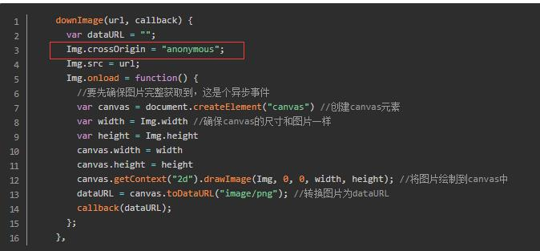

最近做了一个微信内访问的H5页面，长按分享图片发送朋友邀请的海报，网上搜索资料，得出解决思路，用canvas将页面绘制生成图片，
问题：canvas 图片跨域。
解决过程（填坑历程）：
1.从网上存在如图解决办法 img.crossOrigin = "" （专业采坑，数年）。亲测无效。很是不解。

2.网上也存在后端服务解决
设置header头，或者nginx 服务配置等 允许访问。但是，存在问题（图片大部分为了优化，都会存放在第三方cdn.上面。这是第三方的配置，是否允许，自己很难控制）
3.解决办法：采用所有图片路径，转化为base64流来处理。图片存为本地图片。这也可以就避开了跨域问题。
最后个人解决方法：没有采用第3种保存本地，这样会增加本地图片，而且会存在本地跟微信端没有同步更新的问题，不是用户最新的头像。个人是采用远程下载后直接绘制输出图片，这样图片就变成本地图片，解决canvas绘制图片不支持跨域问题。
wxheadimg.aspx 页面代码：
if (!string.IsNullOrEmpty(Request.QueryString["data"].ToString()))
{
HttpWebRequest request = (HttpWebRequest)WebRequest.Create(Request.QueryString["data"].ToString());
request.Timeout = 3000;
WebResponse response = request.GetResponse();
Stream stream = response.GetResponseStream();
Bitmap image = new Bitmap(stream);
//保存为PNG到内存流
MemoryStream ms = new MemoryStream();
image.Save(ms, ImageFormat.Png);
//重新输出头像
Response.BinaryWrite(ms.GetBuffer());
Response.End();
ms.Close();
response.Close();
stream.Close();
} canvas绘制页面引用：<img src="wxheadimg.aspx?data=headimgurl" />
canvas绘制代码也顺便弄出来：
<script type="text/javascript">
window.onload = function ()
{
var IMAGE_URL;
function takeScreenshot(){
var shareContent = document.getElementById('shareMember');//需要截图的包裹的（原生的）DOM 对象
var width = shareContent.offsetWidth; //获取dom 宽度
var height = shareContent.offsetHeight; //获取dom 高度
var canvas = document.createElement("canvas"); //创建一个canvas节点
var scale = 1; //定义任意放大倍数 支持小数
canvas.width = width * scale; //定义canvas 宽度 * 缩放
canvas.height = height * scale; //定义canvas高度 *缩放
canvas.getContext("2d").scale(scale, scale); //获取context,设置scale
//var rect = shareContent.getBoundingClientRect();//获取元素相对于视察的偏移量
//canvas.getContext("2d").translate(-rect.left, -rect.top);//设置context位置，值为相对于视窗的偏移量负值，让图片复位
var opts = {
scale:scale, // 添加的scale 参数
canvas:canvas, //自定义 canvas
logging: true, //日志开关
width:width, //dom 原始宽度
height:height, //dom 原始高度
backgroundColor: 'transparent',
};
html2canvas(shareContent, opts,{useCORS:true,logging:true}).then(function (canvas)
{
IMAGE_URL = canvas.toDataURL("image/png");
$('.copyImage').attr('src',IMAGE_URL);
})
}
takeScreenshot();
}
</script>页面代码 ：
<div class="shareBox" id="shareMember">
<div class="top">
<div class="logo"><img src="wxheadimg.aspx?data=微信头像网址"/></div>
</div>
<div class="middle">
<img src="makeQRCode.aspx?data=二维码内容" class="qrcode" />
</div>
<img src="" class="copyImage">
</div>
.shareBox{position:relative}
.shareBox .copyImage{position:absolute;top:0px;left:0px;z-index:999;opacity:0;height:666px;width:666px;}
最后： 人人为我，我为人人，美美与共